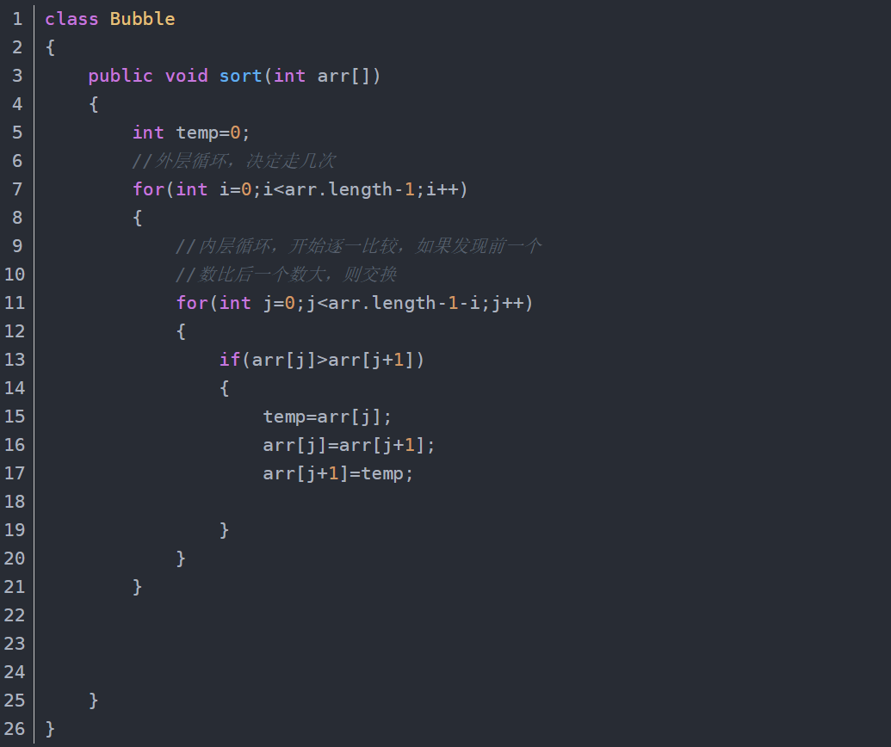

Bubble Sort
Theory:
-
Bubble sort is a simple sorting algorithm. It repeatedly visits the sequence to be sorted, compares the two elements in turn, and swaps them if they are in the wrong order. The job of visiting the sequence is to repeat until no exchange is needed, at which time the sequence has been sorted. The algorithm's name comes from the fact that the smaller the element, the smaller it is, floats slowly to the top of the list.
Code (Java):

Tips：
- Each sort operation can only find a maximum or minimum value (traditional way)
- N numbers need to be sorted, and a total of N-1 times of sorting is performed, and the number of sorting per I trip is (n-i) times. Therefore, a double loop statement can be used, with the outer layer controlling the number of cycles, and the inner layer controlling the number of cycles per trip
Complexity:
- Best Case：T(n) = O(n) : When the input data is already in positive order
- Worst Case：T(n) = O(n^2) : When the input data is in reverse order
- Average Case：T(n) = O(n^2) : Average time complexity is independent of the state of the data
Application scenarios:
-
If the data itself is already not far from the final sorted result, bubble sort may be faster by adding an exchange flag.However, it has to be admitted that bubble sort is not universal in scenes with high performance requirements.
{% if posts %}
Comment Area:
{% for post in posts %}
{{ post.author_id }}
{{ post.create_date }}
{{ post.comment }}
{% endfor %}
{% else %}
No post here. You can publish one first.
{% endif %}